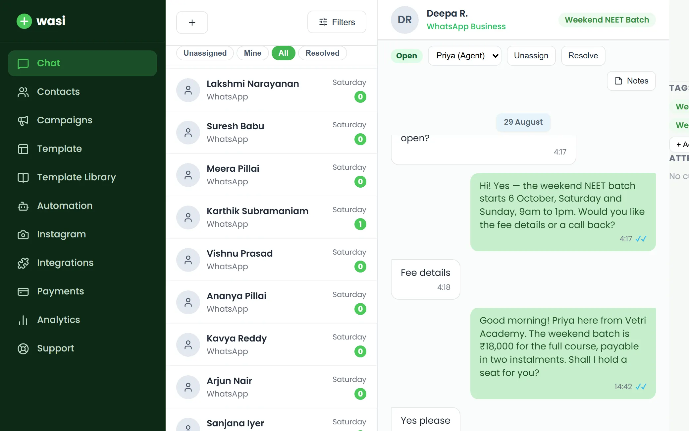
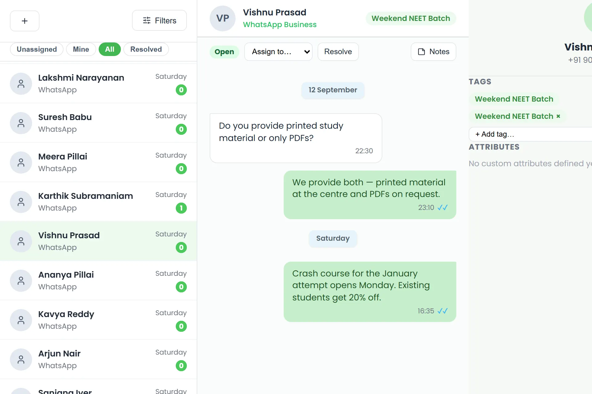
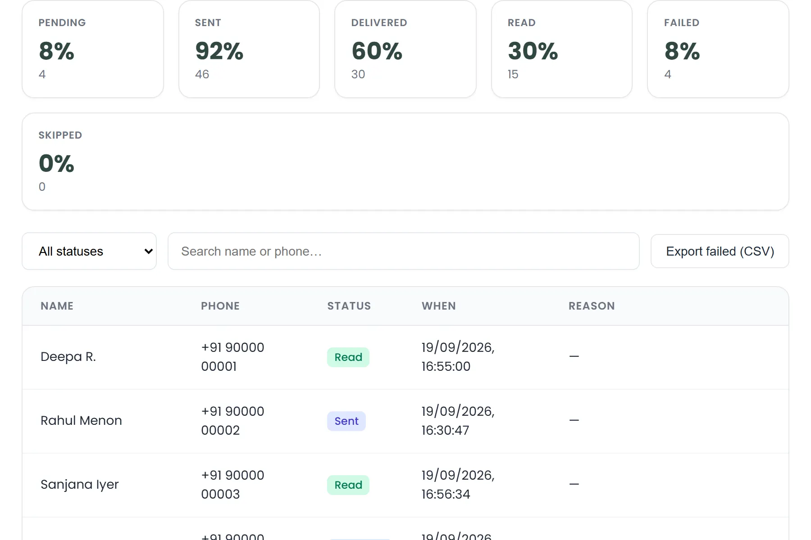
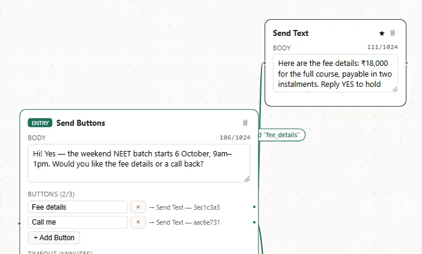
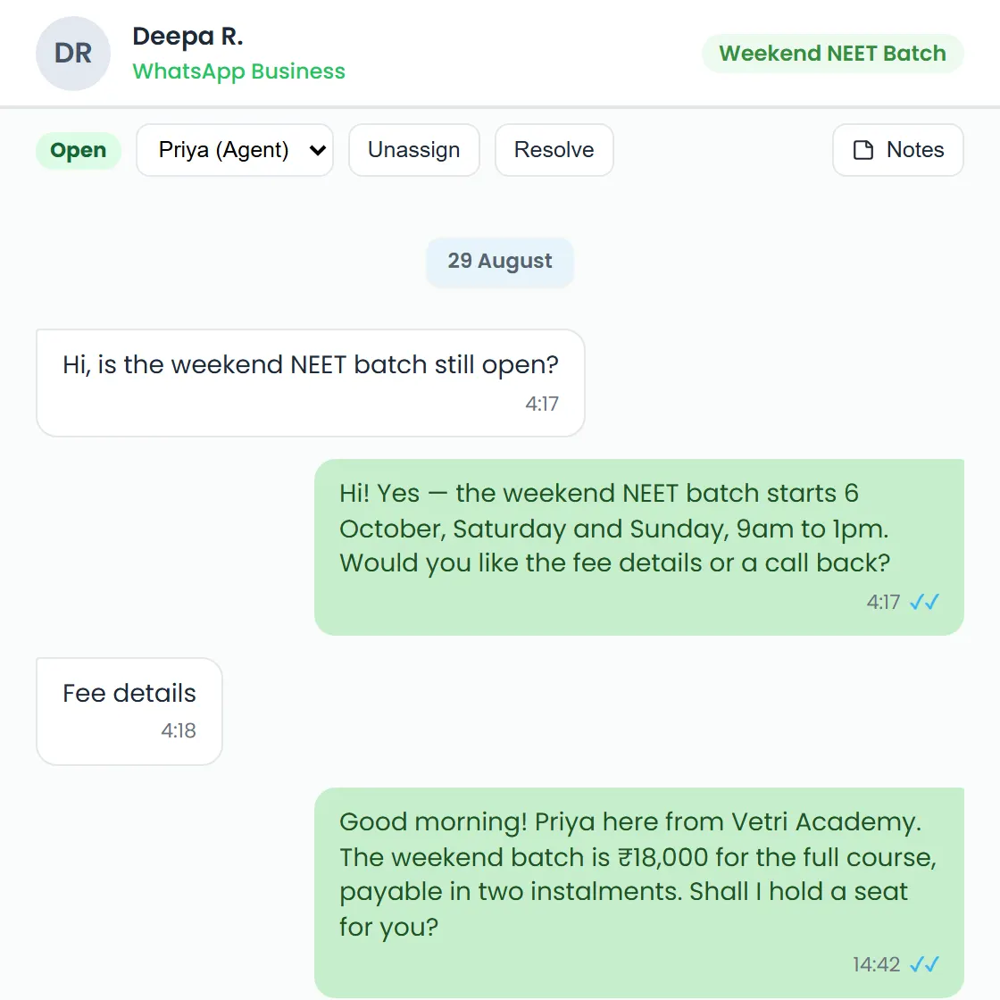

Connect your own WhatsApp number in minutes and run every conversation, campaign and automation from one place. No agency, no waiting.

Not the single-device Business App — the same platform serious WhatsApp tooling runs on.
Connect your own number in minutes, through Meta's own signup flow — no agency in the middle.
Contacts and conversations are scoped to your business alone. Export or close your account anytime.
Every conversation lands in one place — tagged, searchable, with the contact's full history alongside it. Nobody's guessing who already replied.

Build a segment by tag or CSV import, send a templated broadcast, and watch delivered and read rates update in real time — paced to stay within your account's limits.

Build a flow visually — ask a question, capture the reply, route by what they say. Not just a keyword that fires the same canned response every time.

Traditional WhatsApp providers make you email documents back and forth for setup. Wasi uses Meta's own Embedded Signup flow to do that configuration automatically the moment you connect.
Business name, email and password.
Based on your monthly conversation volume. Change it later, anytime.
Meta's Embedded Signup runs right inside Wasi — log into Business Manager, pick or create a WABA, and setup is handled for you.
Land in your inbox, import contacts, send your first campaign the same day.
Two different products from Meta — this is why Wasi (and every real WhatsApp CRM) needs a proper connection step, not just a QR code scan.
Meta's official, cloud-hosted business API. Multiple team members work from one shared inbox, with automation, templates and campaigns.
The free mobile app for small businesses — one phone, one person logged in at a time.
A question at 10:47pm, a bot reply that doesn't wait for office hours, an agent who picks it up in the morning — and a confirmed booking, all in one thread your team can see end to end.

If your WhatsApp number is already active with another provider, we move it to Wasi and handle the release with them — so your chat history, contacts and templates carry over cleanly, not a fresh start.
We confirm what needs to be released on their side before anything moves.
The coordination with your current provider is on us, not you.
Same number, same customers — now running on the Cloud API through Wasi.
All prices in INR per month. WhatsApp conversation charges from Meta are billed separately and pass through at cost.
Illustrative pricing — final numbers pending, not yet quotable.
| Feature | Starter | Growth | Scale |
|---|---|---|---|
| WhatsApp numbers | 1 | 1 | Multiple |
| Conversations / month | 500 | 3,000 | Higher volume |
| Chat inbox | ✓ | ✓ | ✓ |
| Contacts & CRM | ✓ | ✓ | ✓ |
| Basic automation | ✓ | ✓ | ✓ |
| Broadcast campaigns | — | ✓ | ✓ |
| Templates & tags | — | ✓ | ✓ |
| Analytics dashboard | — | ✓ | ✓ |
| Team seats | — | — | ✓ |
| API access | — | — | ✓ |
A Facebook Business Manager account and a phone number that isn't already active on the regular WhatsApp Business App. Meta may ask you to verify your business before your account can send templated messages at scale — that's Meta's requirement, not ours, and typically takes a few minutes to a couple of days.
No. Wasi connects to Meta's official Cloud API, which is what lets multiple team members work from one shared inbox with automation and campaigns. The free app is single-device, single-user, and has no API access at all.
Meta charges per-conversation fees directly, separate from your Wasi subscription. Your Wasi plan pays for the CRM software; Meta's conversation pricing passes through at cost based on your usage.
You do. Your contacts, chat history and templates belong to your business and are scoped to your account only. You can export your data or close your account at any time.
Traditional WhatsApp providers often require you to email business documents and wait days for a human to configure your number. Wasi uses Meta's official Embedded Signup flow to do that configuration automatically the moment you connect.
Yes. You can upgrade or downgrade your plan at any time from account settings; changes apply from your next billing cycle.
Book a demo and see your own inbox, campaigns and automation set up — no obligation.